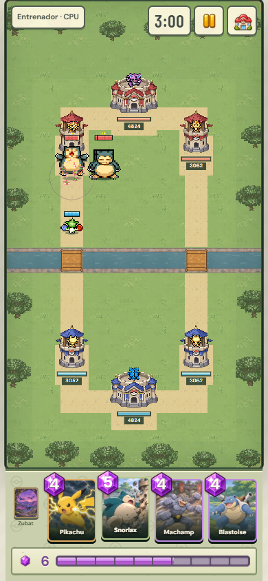
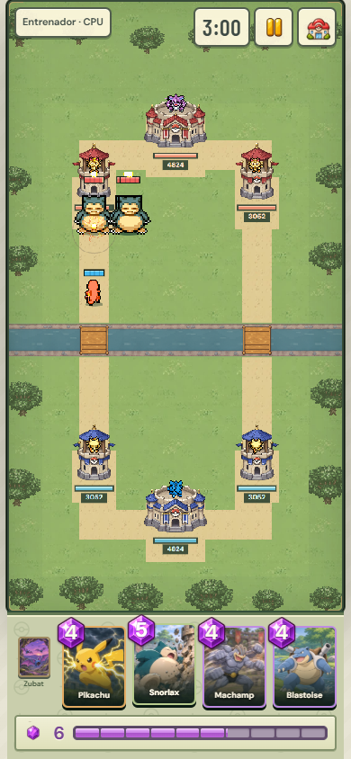
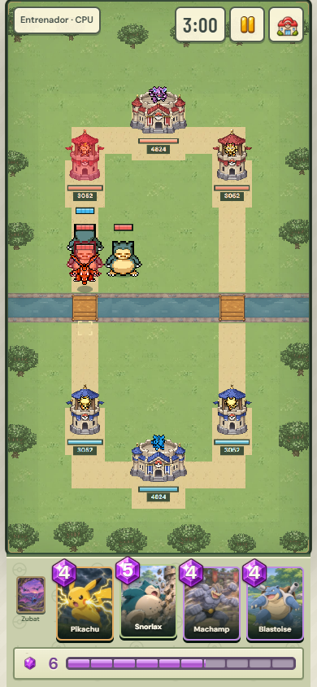
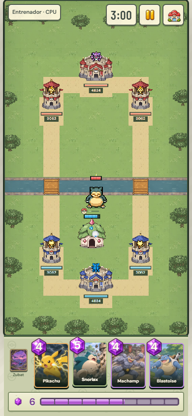
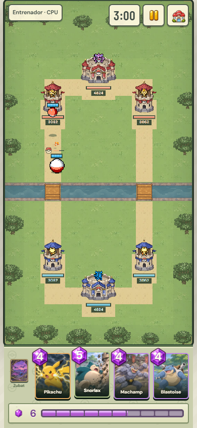

306/306 controles pasan. Todos los criterios de esta matriz pasan.
Corte 2026-11-14T21:44:31.813Z, 6dfb7c3b05a9e0a7bfb37e717d471bf3bfeefb4a. Game30, snapshots15, muestras Renderer60; ambas perspectivas y tres tamaños. Escenas controladas en la app local servida desde el commit; no son una partida publicada.
Método y hallazgos · Resumen · Fuentes, trazas y hashes

66/66 controles.

66/66 controles.

66/66 controles.

54/54 controles.

54/54 controles.